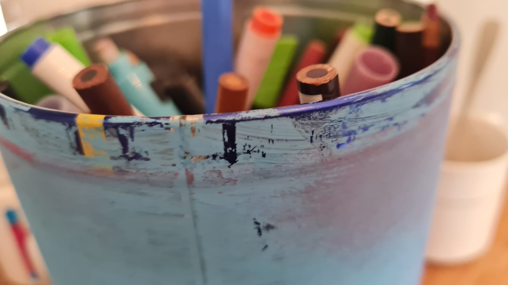
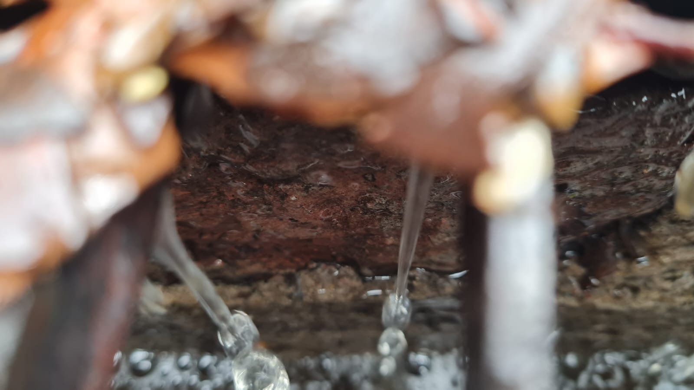
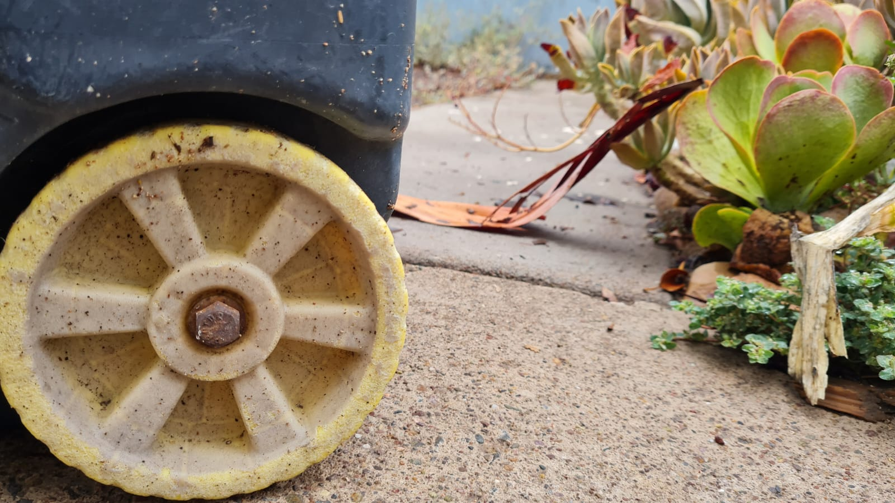
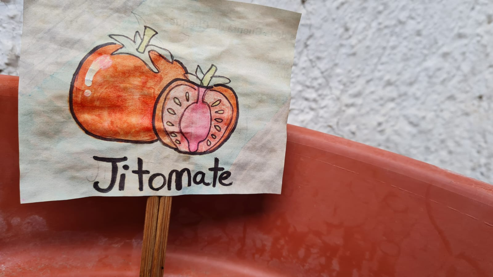
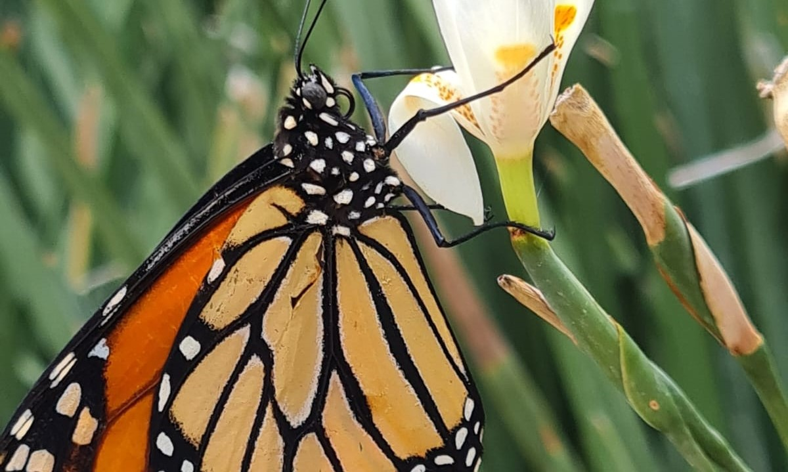
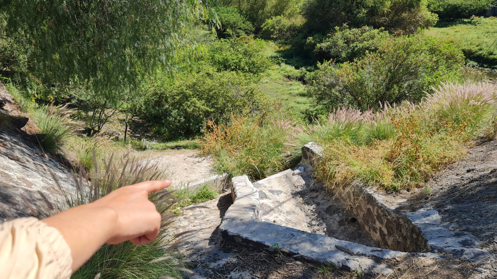
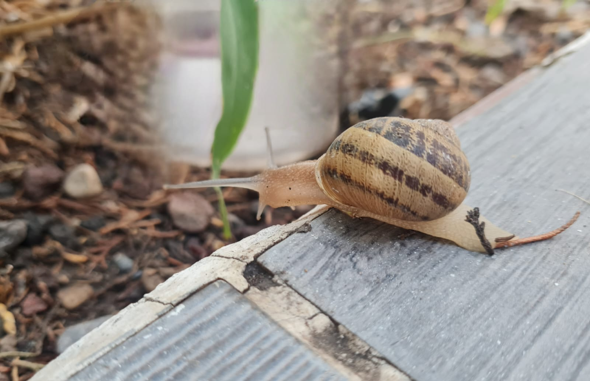
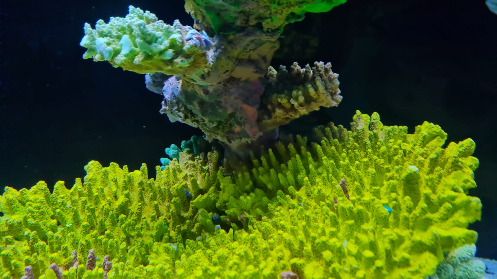
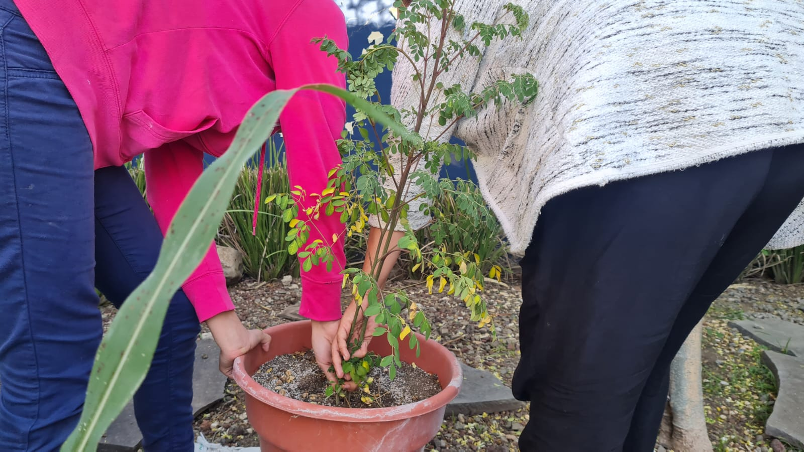

Cuidemos al medio ambiente
¡Conoce cómo!

Reducir, reciclar y reutilizar
Minimiza la cantidad de residuos que generas y conservas los recursos naturales.

Ahorrar agua
Usa el agua con moderación y adopta prácticas para reducir el consumo, como reparar fugas y utilizar tecnologías de ahorro de agua.
Energía eficiente
Fuentes de energía renovables. Reduce el consumo de energía utilizando equipos eficientes y apagando luces y dispositivos cuando no estén en uso.

Transporte sostenible
Camina, anda en bicicleta o usa el transporte público para reducir las emisiones de carbono.

Consumo responsable
Elige productos locales y de temporada para reducir la huella de carbono asociada con el transporte y la prodcucción. Prioriza productos con empaques mínimos y biodegradables.

Conservación de la biodiversidad
Apoya a la protección de los hábitats naturales y la conservación de especies en peligro de extinción.

Educación y conciencia
Aprende sobre problemas ambientales y comparte ese conocimiento con otros. Participa en actividades comunitarias que promuevan la sostenibilidad ambiental.

Respeto por los ecosistemas
No perturbes los ecosistemas naturales y respeta los ciclos naturales de la vida silvestre y las plantas.

Reducción de productos químicos
Minimiza el uso de productos químicos, tóxicos y contaminantes. Opta por alternativas naturales y seguras cuando sea posible.

Participación activa
Únete a organizaciones ambientales locales, nacionales o globales que promuevan la sostenibilidad y la protección del medio ambiente.
Amoxtlic